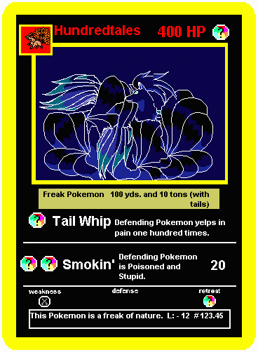

Hundredtales
Last Updated 3/11/00
This and its fellow new card, Pikachu on Fire, have a new type. Hundredtale's type is Strange-Type Pokémon. Instead of the normal Ninetale's status, the new Hundredtales has is a "Freak Pokémon." It's height, weight, and attacks are totally different. So far, the Tail Whip attack does no damage according to the official rules of Pokémon TCG, but maybe the next revision will change that. Smokin' doesn't do much damage, but does poison the Defending Pokémon. What's strange about the attack is that it also is supposed to make the Defending Pokémon "Stupid." Again, the next revision of the rules will probably have an affect on what that does. The new Hundredtales totally changed its number and description. It is the number 123.4, which isn't in MY Pokédex! It's description is short and sweet: "This Pokémon is a freak of nature." I'd have to agree. It's attacks and retreat use Strange-Type energy, a form of energy not yet created. Wizards of the Coast is planning to release a Rainbow-Type energy card which lets a Pokémon have one energy of any type in exchange for losing 10 HP. A Ditto could also use the attacks. This and the Pikachu on Fire cards are the only cards by Wizards of the Coast to use any type of energy besides Colorless. The Weakness is supposed to be a pair of sissors; I don't know about you, but if I had a hundred tales, I wouldn't want anybody snipping them off. It has the greatest number of HP in any Pokémon TCG card yet, rivaling the Jungle card Vileplume (120 HP). It evolves from what looks like a Vulpix, but has over ten tales. Maybe this strange Pokémon evolves from Ninetales in the Gold/Silver versions of Pokémon (the video game). I guess we'll find out in Sept. of 2000.

Related Links:
Pikachu on Fire
Bob the Hobo's Pokémon Section